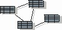

| 工件：数据模型 |
|  |
|
用途
|
数据模型用于描述受系统管理的持久信息的逻辑结构和实际结构。数据模型最初可以通过对现有的持久数据存储（数据库）进行反向设计来创建，或者，可以根据设计模型中的一组持久设计类来创建。 只要持久存储机制以某一非面向对象技术为基础，就需要数据模型。如果无法从设计模型中的持久类结构自动地和机械地派生出持久数据结构，就特别需要数据模型。 它用于定义持久设计类和持久数据结构之间的映射，并用于定义持久数据结构本身。 下面的属性表描述了数据模型的元素。该表中所包含的模型属性的定义与 Unified Modeling Language（UML）V1.3 规范的数据建模概要信息一致。UML V1.4 的数据建模概要元素尚未定义。 |
关系
| 角色 | 负责人: | 修改者: |
|---|---|---|
| 任务 | 输入至: | 输出自: |
| 流程使用情况 | ||
定制
| 说明选项 | UML 说明：包，构造型为 <<model>>。 数据模型可能有以下属性属性：
对于几乎没有持久数据的项目，或者具有从设计类到持久机制的直接了当转换的项目，可能不需要单独的数据模型。对于为了持久性而利用 RDBMS 的项目，将需要定制数据模型来实现底层数据库的特定语义，这种语义可能因 RDMBS 而稍有变化。 |
|---|
更多信息
© Copyright IBM Corp. 1987, 2006. All Rights Reserved. |